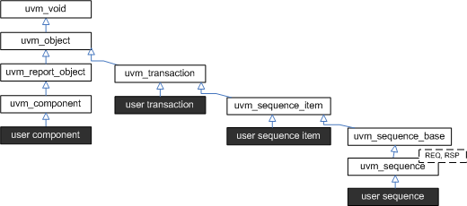

Sequence Classes
Sequences encapsulate user-defined procedures that generate multiple uvm_sequence_item-based transactions. Such sequences can be reused, extended, randomized, and combined sequentially and hierarchically in interesting ways to produce realistic stimulus to your DUT.
With uvm_sequence objects, users can encapsulate DUT initialization code, bus-based stress tests, network protocol stacks-- anything procedural-- then have them all execute in specific or random order to more quickly reach corner cases and coverage goals.
The UVM sequence item and sequence class hierarchy is shown below.
UVM Ref Sequence

- uvm_sequence_item - The uvm_sequence_item is the base class for user-defined transactions that leverage the stimulus generation and control capabilities of the sequence-sequencer mechanism.
- uvm_sequence #(REQ,RSP) - The uvm_sequence extends uvm_sequence_item to add the ability to generate streams of uvm_sequence_items, either directly or by recursively executing other uvm_sequences.
Summary
| Sequence Classes | |
| Sequences encapsulate user-defined procedures that generate multiple uvm_sequence_item-based transactions. |